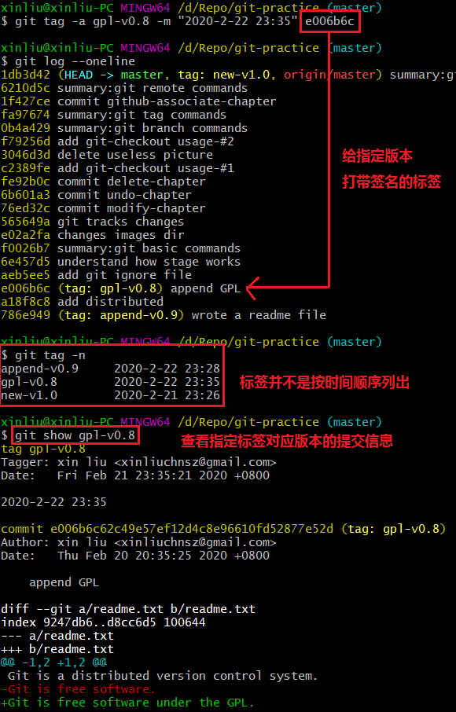
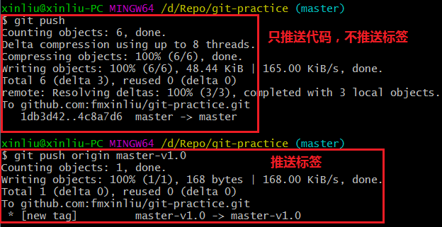
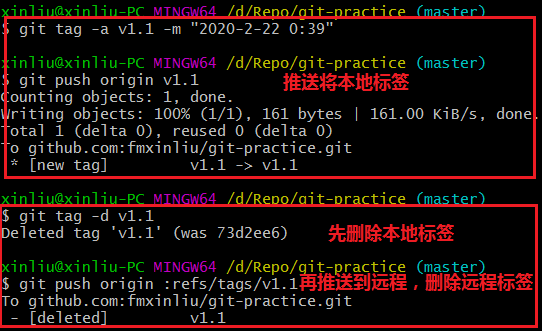

◆ 切换到需要打标签的分支上。
◆ 执行git tag -a <tag_name> -m <commit_info> <commit_hash>[在指定的版本上][创建+]指定标签信息。
◆ 执行git tag -n查看所有标签信息。
◆ 执行git show <tag_name>查看指定标签对应版本的提交信息。
注意：标签总是和某个 commit 挂钩。如果这个 commit 既出现在 master 分支，又出现在 develop 分支，那么在这两个分支上都可以看到这个标签。

◆ git push origin <tag_name> - 推送指定的本地标签。
◆ git push origin --tags - 推送全部未推送过的本地标签。
注意：git push并不会推送标签。

① 先删除指定的本地标签：git tag -d <tag_name>
② 再推送指定的本地标签：git push origin :refs/tags/<tag_name>
注意：git tag -d <tag_name>只删除了本地标签，不影响远程标签。
